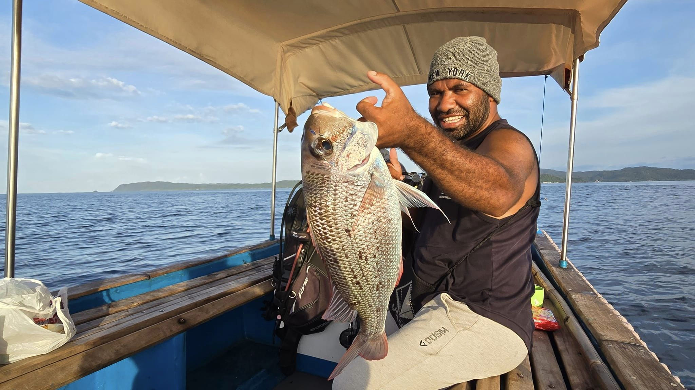

Tips
Tips Memancing Ikan Bagi Pemula
Lima langkah dasar mulai dari memilih lokasi aman, umpan yang tepat, hingga melatih kesabaran saat strike.
Baca SelengkapnyaKumpulan tips praktis, tutorial kolam, informasi olahraga, hingga ulasan lokasi pemancingan populer.

Lima langkah dasar mulai dari memilih lokasi aman, umpan yang tepat, hingga melatih kesabaran saat strike.
Baca Selengkapnya
Panduan memilih panjang joran, senar, pelampung, dan cara merekatkan umpan di kolam pemancingan.
Baca Selengkapnya
Daftar lokasi kolam pemancingan terjangkau dan populer di Semarang lengkap dengan jam buka dan alamatnya.
Baca Selengkapnya
Penjelasan mengenai manfaat fisik dan kesehatan mental dari aktivitas memancing sebagai olahraga rekreasi.
Baca Selengkapnya
Mengenal arti istilah strike serta faktor umpan, teknik, dan aktivitas ikan yang memengaruhinya.
Baca Selengkapnya